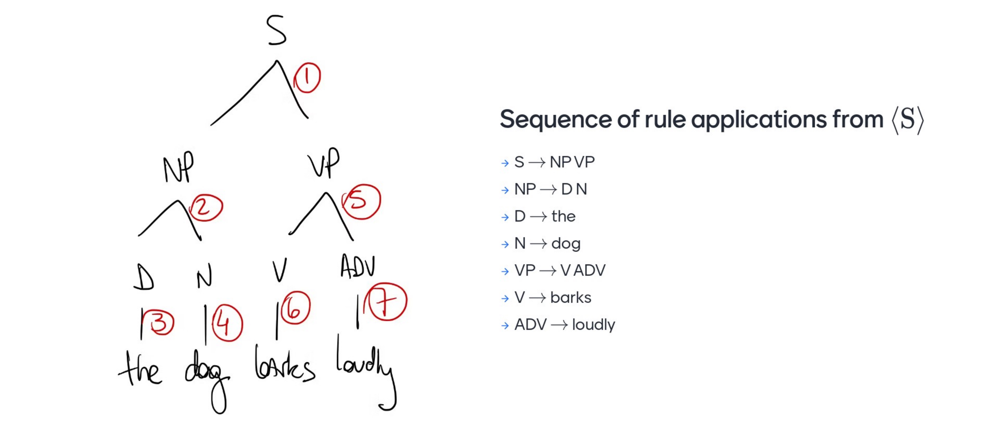
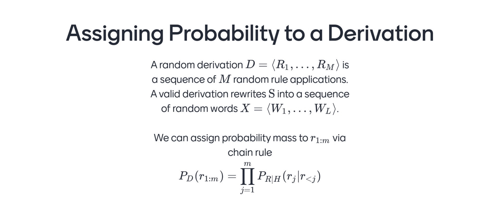

- BoW
Bag of Words does not consider order, it is basically counting what occur in a sentence in arbitrary order
- Markov Models
They are bags of phrases, they have better units but are very sparse
- HMMs:
Now we work in the tag space. Here we push the memory layer again to another space, in the tag space. So no memory in the word space itself. We capture shallo syntactic patterns such as NOUN is preceeded by an ADJECTIVE in english
HMMs does not really have power for semantics because words are drawn conditionally independently
Now instead of just categories we talk about phrase categories.
You can now group words into phrases and these phrases can be labeled for their syntactic role
Now instead of isolated tags now we considered as phrases
A phrase usually has what is called a syntactic head, and usually is the first occurrences that name the phrase for i.e NP, NOUN is the head. All remaining after or before its optional but in needs to contain the head
Constituency is groups of words that act as a unit once you identify them. An evidence for this is that they appear in similar syntactic environments i.e NP ‘Nounn Phrases’ tend to appear before a verb
- Symbols
- We start from a vocabulary of symbols or (the constants): words
i.e ‘I’, ‘eat’, ‘pizza’ - You have non-terminals or (variables): phrasal categories
‘S’, ‘NP’, ‘VP’
- Rules: tells you how to rewrite a non-terminal category into a string that is made up of terminal and non-terminal symbols
The grammar is context free if on the left side of the any rule you have a single non-terminal. That makes it context free. IF there would be a collection of terminals on the left hand side, that would be context sensitive grammar
Every single CFGs is an algorithm to represent a (in)finite set of strings. Is a finite representation of an infinite object
(constants): - \(\sum\) terminals symbols: words
i.e ‘I’, ‘eat’, ‘pizza’
(variables): - \(\textbf{V}\) non-terminals symbols: phrasal categories
i.e ‘S’, ‘NP’, ‘VP’, ‘ADJ’, ‘DET’
In this set there a start symbol called \(S\) that belongs to \(\textbf{V}\). We will put this one at the top of the context free grammar tree

The arity is defined by the longest right hand side on the rule.
All CFGs can be rewritten to be binary that accepts the same exact strings, so the sentences that one accept is the same as the one the other would accept
CFG gives a recipe to generate text.
A derivation is a sequence of strings. We start with the ‘start’ symbol then recursively we rewrite the leftmost non-terminal (‘S’,‘NN’.. ) sequence X.
X is a sequence that belongs to \(\textbf{V}\) so it can be a subset like:
X:{‘S’, ‘DET’}
If we are able to determine with the CFG then the sequence its part of the language, the grammar specifies the language, the set of words sequences. If you can derive a word sequences then it is part of the grammar implied by this CFG, its name then you would use is called the hug of the derivation

- You start with S
- The left most symbol is S, then this is rewriten as Np, VP. There is a rule in the grammar that says S -> NP, VP
- NP are usually DETERMINANTS or NOUNS, so we write that
- D, now can be replace by its terminal/constant i.e ‘the’
- N, can be rewrite it as ‘dog’ and so son..
We accomplished with this ‘the dog has barked loudly’ which is a full sentence. We use a depth-first order going always left.
From top to bottom: generation, the opposite its recognition.
Where does the preposition attach? Does it attach to the noun pizza? So it is pizza with anchovies on top, or does the preposition attach to the verb phrase eat pizza, which then becomes the instrument of eating
Prepositions are words that show the relationship between a noun (or pronoun) and other elements in a sentence:
- In: I live in the city.
- On: The book is on the table.
- Under: The cat is under the chair.
- Between: Choose between the two options.
- Behind: The sun sets behind the mountains.
- Across: They walked across the bridge.
- Through: We walked through the park.
- Above: The plane is flying above the clouds.
- Beneath: The treasure is buried beneath the sand.
- Near: The store is near the school.
So here there is ambiguity in syntactic parsing. The way we deal with structural ambiguity is by learning a probability distribution
There is not a tree for every single sentence in english so now we have to rely on a prob distribution

To assign prob to a ‘Derivation’ we need random variables again. Here the length of the rule derivation R1…R_m is not the same as the length of the words sequence W1…W_L
The derivations length depends on the grammar, but for every tree structure at the bottom then you find words, so for every sequence of M rule applications there is a sequence of words that you can read at the bottom. I will assign a probability to a derivation by asigning probs to each one of the rules that I applied given the rules that I have already applied (so that is chain rule as how we did it for a sequence of words, but now we do chain rule for a sequence of rules)
For now we are gonna make Markov assumptions and make rules independently. We are gonna assign probabilities to each rule independently fo the next. A rule in itself it is not an atomic thing. A rule is a pair, a rule has not terminal on the left and a string on the right
This is the trick to introduce some dependency:
We will generate the right hand side of the rule given is not a terminal symbol. So basically we imitate the process by which you go deeper and deeper until you find a terminal
So you look at the non-terminal and you will rewrite it without access to more context.
You can sample from the generative history.
- Start a queue with an S inside. If all symbols there are terminals, then you are go to go that is a sentence
- IF not true, pick the left most, pop it, take it from that thing and replace it by the RHS of a rule (that has that symbol on the LHS and note that you will have multiple rules, but they have probabilities so you draw one of them follwoing the distribution of their probabilities) rewrite that symbol. Do that with certain probability and repeat from 2.
We have a condition distribution where we condition on, the LHS non-terminan symbol
We generate the RHS string so i.e.
If S is the variable you are rewritting and you happen to know two rules, NP->VP and S-> VP. So you either write a NOUN PHRASE and concatenate with it or you have a VERB PHRASE and you concatenate it. So here we have two parameters, they are probabilities, they are normalized and they summ up to one
PCFG (usually the number of outcomes will be fixed but here is different), here it is not for every symbol you condition on, the number of outcomes depends on how many rules you know for that symbol. So I know two rules for the start S, but I know 3 terminals for the non-terminal NOUN, cat, dog and bird. So the categorical distribution will have different number of probabilities this time
So the categorical distribution will have different number of probs in them, so when you are given a derivation how do we get its probability mass. Yoy multiply the probabilities for the rules that are inside. And where do we find these probabilities, well this is tabular, so in table
Given a dataset can you do MLE, to find the probability that you would rewrite a varaible ‘b’ into a string Beta. ie.e maybe ‘v=NP’ and BETA=the terminal NOUN
So what is the probability that you would write a NOUN PHRASE as a sequence of DETERMINER followed by a NOUN. For that to come up I give you a model: PCFG, I give you the model description, I give you an al algorithm so MLE, and give you a dataset.
So this in next slide is how we compute the MLE
\(\theta\) is the name of the table, the row is ‘v’ and the column=sequence on the right so Beta
So we count how many times v has rewrite to B and you divide the numer of times you have seen ‘v’
So if this was a NP rewrite to a DETERMINER and a NOUN then, we count how many times I have seen this divide by how many times I have seen NP being rewrite by whatever